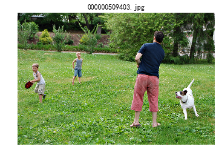
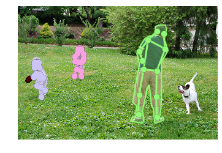
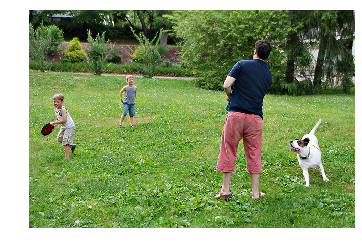

Purdue机器学习入门（三）COCO数据集导入
文章目录
Python IDE之争
究竟改用哪个编程呢？对于高手来说用 记事本 都可以。但是对于普通人来说还是有必要选选的，Pycharm , Visual Studio Code都不错。但今天开始用Jupyter了，编程远不如以上两个IDE，但是学习机器学习还是非常合适的。Jupyter配置方法
COCO的用法
直接看代码吧。
1 2 3 4 5 6 7 8 9 10 11 12 13 14 15 16 17 18 19 20 21 22 23 24 25 26 27 28 29 30 31 32 33 34 35 36 37 38 39 40 41 42 43 44 45 46 47 48 49 50 51 52 53 54 55 56 57 58 59 60 61 62 63 64 65 66 67 68 69 70 71 72 |
%matplotlib inline
from pycocotools.coco import COCO
import numpy as np
import skimage.io as io
import matplotlib.pyplot as plt
import pylab
# pylab.rcParams['figure.figsize'] = (8.0, 10.0)
plt.rcParams['font.sans-serif'] = [u'SimHei']
plt.rcParams['axes.unicode_minus'] = False
dataDir='D:/ML/data/coco'
dataType='val2017'
annFile='{}/annotations/instances_{}.json'.format(dataDir,dataType)
# 导入数据库
coco=COCO(annFile)
# 显示数据集全部分类及super分类
cats = coco.loadCats(coco.getCatIds())
nms=[cat['name'] for cat in cats]
print('COCO categories: \n{}\n'.format(' '.join(nms)))
nms = set([cat['supercategory'] for cat in cats])
print('COCO supercategories: \n{}'.format(' '.join(nms)))
# 从满足特征标签的数据中随机选一个
catIds = coco.getCatIds(catNms=['person','dog']);
imgIds = coco.getImgIds(catIds=catIds );
img = coco.loadImgs(imgIds[np.random.randint(0,len(imgIds))])[0]
# 根据名称打开该图片
# I = io.imread('%s/images/%s/%s'%(dataDir,dataType,img['file_name']))
# 根据网址下载该图片
I = io.imread(img['coco_url'])
plt.axis('off')
plt.title(img['file_name'])
plt.imshow(I)
plt.show()
# 显示注释
plt.imshow(I); plt.axis('off')
annIds = coco.getAnnIds(imgIds=img['id'], catIds=catIds, iscrowd=None)
anns = coco.loadAnns(annIds)
coco.showAnns(anns)
plt.show()
# 导入人的keypoints
annFile = '{}/annotations/person_keypoints_{}.json'.format(dataDir,dataType)
coco_kps=COCO(annFile)
# 显示人的keypoints
plt.imshow(I); plt.axis('off')
ax = plt.gca()
annIds = coco_kps.getAnnIds(imgIds=img['id'], catIds=catIds, iscrowd=None)
anns = coco_kps.loadAnns(annIds)
coco_kps.showAnns(anns)
plt.show()
# 导入描述
annFile = '{}/annotations/captions_{}.json'.format(dataDir,dataType)
coco_caps=COCO(annFile)
from googletrans import Translator
translator = Translator()
#导入google翻译
# 显示描述
annIds = coco_caps.getAnnIds(imgIds=img['id']);
anns = coco_caps.loadAnns(annIds)
for s in anns:#翻译描述内容
print(translator.translate(s['caption'], dest='zh-cn').text)
coco_caps.showAnns(anns)
plt.imshow(I); plt.axis('off'); plt.show() |
结果显示：
1 2 3 4 5 6 7 8 9 |
loading annotations into memory... Done (t=1.00s) creating index... index created! COCO categories: person bicycle car motorcycle airplane bus train truck boat traffic light fire hydrant stop sign parking meter bench bird cat dog horse sheep cow elephant bear zebra giraffe backpack umbrella handbag tie suitcase frisbee skis snowboard sports ball kite baseball bat baseball glove skateboard surfboard tennis racket bottle wine glass cup fork knife spoon bowl banana apple sandwich orange broccoli carrot hot dog pizza donut cake chair couch potted plant bed dining table toilet tv laptop mouse remote keyboard cell phone microwave oven toaster sink refrigerator book clock vase scissors teddy bear hair drier toothbrush COCO supercategories: furniture animal sports kitchen person electronic food outdoor vehicle appliance accessory indoor |

1 2 3 4 |
loading annotations into memory... Done (t=0.53s) creating index... index created! |

1 2 3 4 5 6 7 8 9 10 11 12 13 14 |
loading annotations into memory... Done (t=0.08s) creating index... index created! 一个家庭在院子里和他们的狗一起玩飞盘。 这只狗在一个和两个孩子一起玩的成年人附近跑。 一个男人，两个孩子和一只狗正在玩飞盘。 当一只狗跑来跑去时，一个男人向一个院子里的小男孩扔球。 一个男人正在和两个孩子和一只狗玩耍。 A family outside in a yard playing frisbee with their dog. The dog runs near an adult who plays with two children. A man, two kids and a dog are playing Frisbee. A man throws a ball with to small boys in a yard as a dog runs around. A man is playing catch with two children and a dog. |

文章作者 Jeff Liu
上次更新 2019-01-30